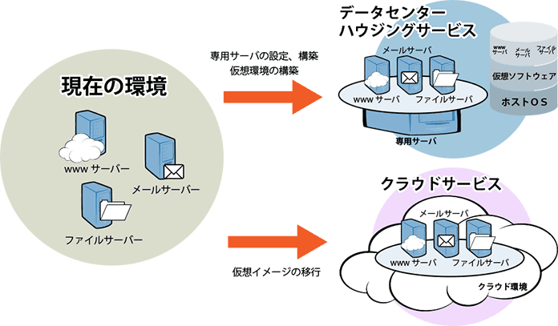

社内インフラ構築・保守
infrastructure
社内サーバインフラの構築
最近は、企業内のサーバインフラでもLinuxやOSSが活用されています。従来、大変高額なサポート費用を必要としたデータベースサーバも、LinuxやOSSを利用すればライセンスが不要になるため、大きなメリットがあります。また、スタンダードな技術を組み合わせることで、OSSだけを使って止まりにくいシステムを作ることも可能になりました。
さらに、企業の競争の源泉である社内システムでは、自社の業務フローに合わせて、適切にシステムを作り替えていくこともとても重要です。OSSは、そうした分野でも活用することができます。
より安心できる環境へ

LinuxやOSSを活用した社内サーバ構築
社内のサーバインフラに対して、皆様からいただくご要望は様々です。
- ハードウェアが古くなったシステムを延命したいが費用を抑えたい
- ちょっとした障害で業務が止まらないようにしたい
- データベースやファイルサーバを二重化したい
- 情報漏洩を防ぎたい
- セキュリティを強化したい
- しっかりとバックアップを取りたい
- スマートフォンやタブレットなどと連携したい
- 機動力のある社内システムを作りたい
私たちは、この様なご要望をしっかりヒアリングした上で、最適なシステムを提案します。
OSSを利用してカスタマイズを行うため、ご要望・状況に合ったシステム構築をすることができます。
社内サーバインフラの構築事例
NFSサーバ冗長化事例
WWW上の情報検索サービスのために、複数台のサーバでコンテンツを共有し、サービスを安定稼動させたいというご要望がありました。デージーネットのクラスタリング技術を応用し、HAクラスタ化したNFSサーバを構築しました。
OSSの掲示板システム（phpBB）事例
企業のグループ内で使用するための災害時用掲示板システムを構築しました。
企業内で使用しているActiveDirectoryと連携してアカウントの一元管理を行いたいというご要望に合わせて、LDAP連携が実装されているオープンソースソフトウェアのphpBBを使用した掲示板システムを構築しました。
システム構築に関する様々なご相談にご対応いたします。
メールはもちろん、お急ぎの方はお電話でも承っております。
本社 03-0000-7001 東京営業所 03-0000-7077